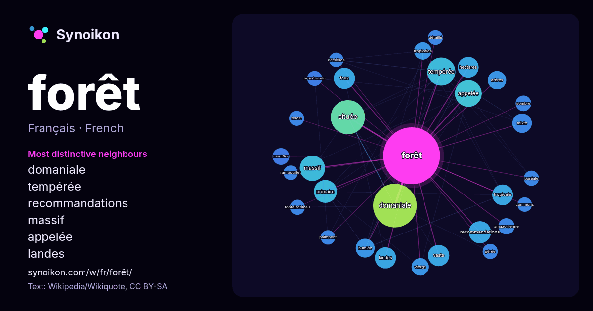

Français · liste des mots du jour
forêt
“forest” · Les mots trouvés autour de lui dans 1545 occurrences issues de Wikipédia, Wikiquote.

Voisins les plus spécifiques
- domaniale 100×
- tempérée 42×
- recommandations 26×
- massif 26×
- appelée 25×
- landes 23×
- feux 22×
- tropicale 22×
- primaire 22×
- hectares 21×
- vaste 18×
- située 18×
- mixte 17×
- humide 17×
- tropicales 16×
- amazonienne 15×
- modifier 15×
- arbres 14×
- vierge 13×
- brocéliande 13×
× = combien de fois plus souvent que dans le texte général de Wikipédia.
Voisins les plus fréquents
- domaniale 101
- située 62
- tempérée 42
- appelée 38
- france 36
- massif 34
- française 30
- primaire 28
- grand 27
- recommandations 26
- feux 24
- landes 24
- national 24
- vaste 24
- hectares 23
- tropicale 23
- bois 22
- nord 21
- mixte 20
- humide 19
En contexte
- Pour les articles homonymes, voir Forêt (homonymie). Une forêt ou un massif forestier est un écosystème, relativement étendu, constitué principalement Wikipedia snippets · Forêt
- « Forêt vierge » redirige ici. Pour le roman, voir Forêt vierge (livre). Une forêt primaire, ou plus couramment une forêt vierge, appelée parfois aussi Wikipedia snippets · Forêt primaire
- Territoires (France) (fr) Feux de forêt, un site internet du service canadien des forêts (fr) Prévention des feux de forêt en Suisse, un site internet de Wikipedia snippets · Feu de forêt
- Office national des forêts Zone rouge (séquelles de guerre) Fonds stratégique de la forêt et du bois Forêt privée française Forêt domaniale Inventaire Wikipedia snippets · Forêt en France
- Ne doit pas être confondu avec Jungle. La forêt tropicale est la forêt caractéristique des régions tropicales et équatoriales. Sous ce terme se cachent Wikipedia snippets · Forêt tropicale
- dans la forêt amazonienne que d'êtres humains sur l'ensemble de la planète), la forêt amazonienne est l'une des trois plus importantes forêts primaires Wikipedia snippets · Forêt amazonienne
- La forêt secondaire, par opposition à la forêt primaire, est une forêt qui a repoussé après avoir été déboisée, ou une forêt exploitée par l'homme de Wikipedia snippets · Forêt secondaire
- Fontainebleau, ou plus simplement et moins précisément la forêt de Fontainebleau, et anciennement la forêt de Bière (dérivé de bruyère), est un important massif Wikipedia snippets · Forêt de Fontainebleau
Autres mots
- art
- automne
- carte
- chanson
- chat
- chemin
- cheval
- chien
- climat
- cloche
- cœur
- dieu
- désert
- eau
- famille
- histoire
- hiver
- horloge
- jardin
- langue
- miel
- miroir
- monnaie
- montagne
- mort
- mère
- nature
- nourriture
- ombre
- pain
- pluie
- pont
- pouvoir
- printemps
- santé
- science
- sel
- silence
- temps
- tempête
- thé
- train
- travail
- trésor
- vie
- ville
- vérité
- étoile
- île
Précalculé le 2026-10-09 avec les paramètres par défaut (±5 mots, corpus moyen). La carte interactive peut l’actualiser avec des données en direct.
Interface traduite automatiquement ; corrections bienvenues.